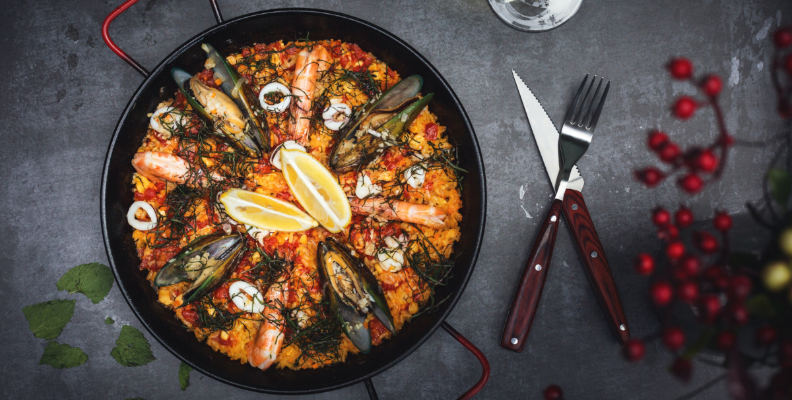
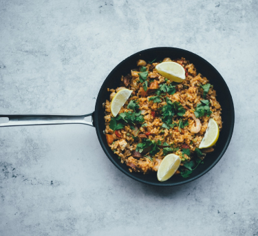

Паэлья с морепродуктами
Воскресенье - это день, когда семьи собираются дома или идут в бар, обедают и проводят вместе время чтобы поделится новостями, увидеть как растут дети, племянники, внуки. Если собираются дома, часто делают паэлью или рис с разными ингредиентами, зависит от вкуса и региона где проживают. Как описано в моем посте, рецептов паэльи очень много.
Содержание статьи:
История блюда
Легенды о происхождении паэльи также относятся к работникам в поле, которые готовили это блюдо на открытом огне, используя доступные им ингредиенты, такие как рис, овощи и мясо.
Легенды о происхождении паэльи также относятся к работникам в поле, которые готовили это блюдо на открытом огне, используя доступные им ингредиенты, такие как рис, овощи и мясо.
Легенды о происхождении паэльи также относятся к работникам в поле, которые готовили это блюдо на открытом огне, используя доступные им ингредиенты, такие как рис, овощи и мясо.
В чем готовить паэлью с морепродуктами?
Паэлью традиционно готовят в специальной плоской сковороде, называемой "паэльницей" или "паэльей". Эта сковорода имеет широкое дно и невысокие бортики, что позволяет равномерно распределить тепло и создать идеальное основание для приготовления паэльи. Если у вас нет паэльницы, вы можете использовать широкую и неглубокую сковороду с плоским дном.
Главное, чтобы сковорода была достаточно большой, чтобы вместить все ингредиенты паэльи в один слой. Важно также выбрать сковороду с толстым дном, чтобы равномерно распределять тепло и избежать прилипания ингредиентов. Желательно, чтобы сковорода была изготовлена из материала, который хорошо сохраняет тепло, такого как чугун или сталь.
Независимо от выбранной сковороды, важно помнить, что использование правильной посуды поможет вам достичь наилучших результатов при приготовлении аутентичной и вкусной паэльи.
- Сковорода с тонким дном
- Сковорода с тонким дном
- Сковорода с тонким дном
Надо учитывать, что высота слоя риса примерно в 1 палец. Поэтому если делаете на две порции, то диаметр сковороды должен быть достаточным. Например, если вы делаете на двоих, как в этом рецепте, то диаметр должен быть от 40 см